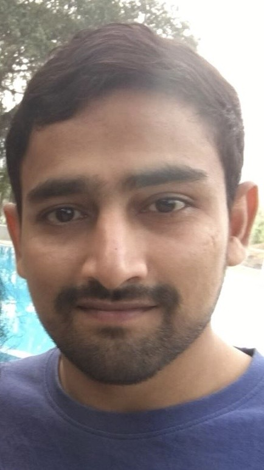

Rakesh Varma

Results-driven and adaptable programmer with 5+ years of experience in web development.
Work Experience
Senior Application Associate, Contract (Hybrid)
ICON plc, CANADA | Nov 2021 – Present
- Oversaw the development and maintenance of code using advanced VBA, SQL, JavaScript, HTML, and CSS.
- Led the creation and enhancement of SharePoint sites to streamline project management and team collaboration.
- Applied expertise in browser dev tools to diagnose and resolve complex website API issues.
- Facilitated Agile processes, guiding teams using JIRA and Confluence to enhance productivity and issue resolution.
Application Specialist, Full-Time (Remote)
IQVIA, CANADA | Mar 2021 - Sep 2021
- Developed and maintained code using VBA, SQL, JavaScript, HTML, and CSS.
- Created and updated SharePoint sites for project management and collaboration.
- Utilized browser dev tools to analyze and troubleshoot website API methods.
- Collaborated within an Agile environment using JIRA and Confluence.
Data Analyst (Application Analyst), Full-Time
COGNIZANT TECHNOLOGY SOLUTIONS, Navi Mumbai, INDIA | Jan 2019 - Mar 2020
- Assisted in the design and maintenance of code using VBA, SQL, JavaScript, HTML, and CSS.
- Supported the enhancement and maintenance of SharePoint sites for project and team management.
- Utilized browser dev tools to identify and fix web API issues.
- Collaborated in Agile project teams using JIRA and Confluence for efficient workflow management.
Junior Quality Analyst, Full-Time
COGNIZANT TECHNOLOGY SOLUTIONS, Navi Mumbai, INDIA | Nov 2014 - Dec 2018
- Developed and executed test cases, test plans, and automation scripts.
- Designed and implemented Selenium WebDriver automation framework with TestNG and Maven.
- Performed cross-browser testing and database validation using SQL queries.
- Used Jira for bug tracking, reporting, and resolution.
Skills
- Programming Languages: Java⭐️⭐️⭐️⭐️, JavaScript⭐️⭐️⭐️⭐️
- Frontend: React Native⭐️⭐️, HTML⭐️⭐️⭐️⭐️, CSS⭐️⭐️⭐️⭐️
- Backend: Node.js⭐️⭐️⭐️, Express.js⭐️⭐️⭐️, EJS⭐️⭐️⭐️
- Database: PostgreSQL⭐️⭐️⭐️, MySQL⭐️⭐️, MongoDB⭐️⭐️
- Others (Beginner): AWS⭐️, Machine Learning⭐️, Electron JS⭐️
Awards & Certifications
- Enhanced productivity by 30% through the creation and maintenance of high-quality code using VBA, SQL, JavaScript, HTML, and CSS.
- Best Application Associate, ICON plc
- Decreased System Downtime by 20% by optimizing test environment management.
- Certified Java Developer
- ISTQB Certified
Education
- Bachelor of Science in Technology, Sri Ramachandra University, 2005-2009
- Master of Science in Information Technology, Sri Ramachandra University, 2009-2011
Other